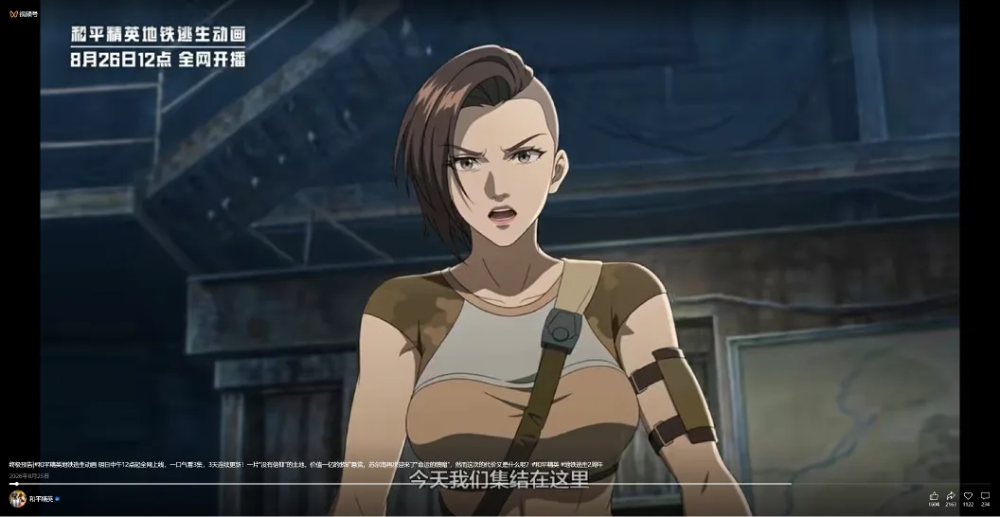
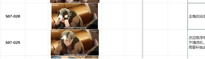
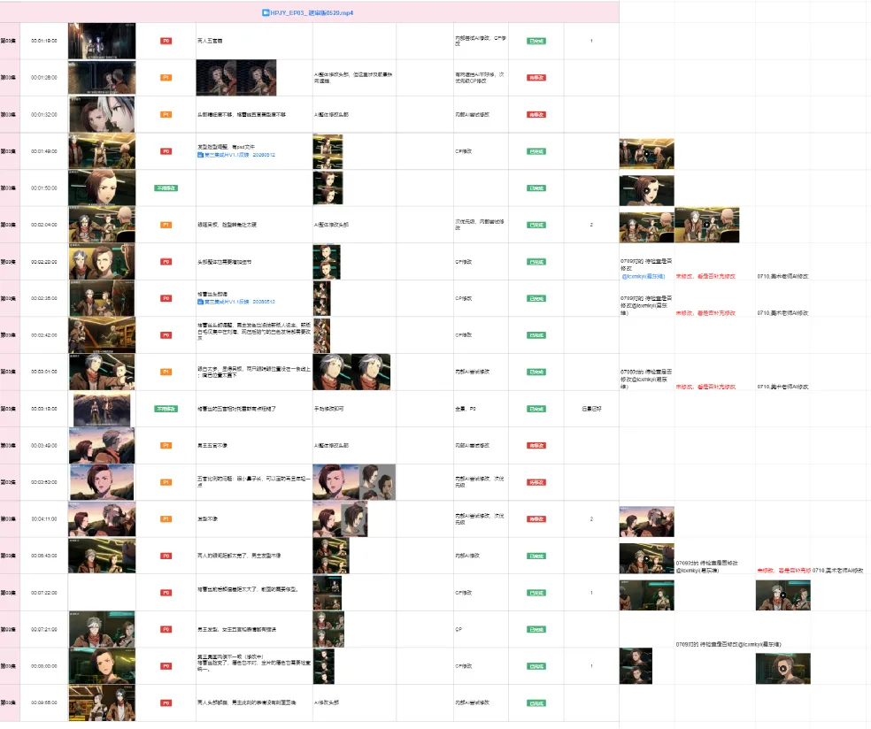
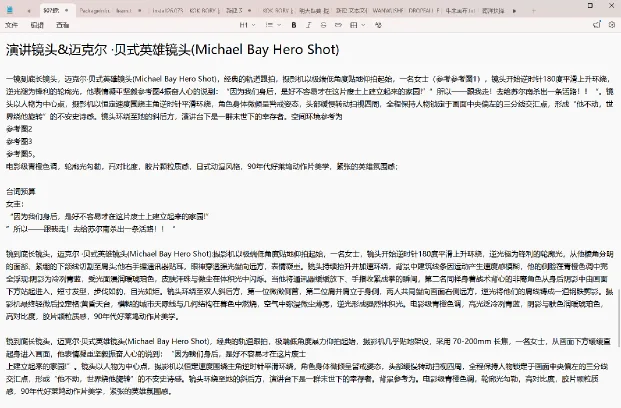
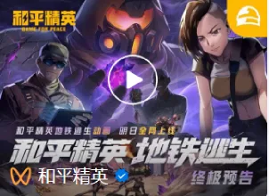
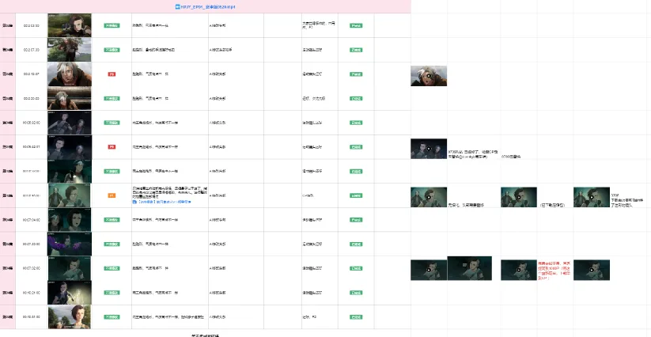
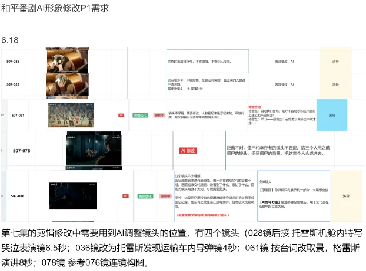
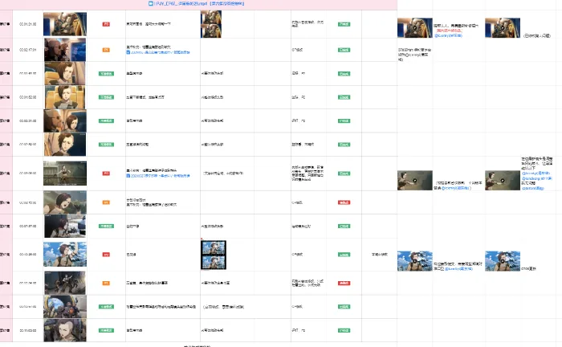
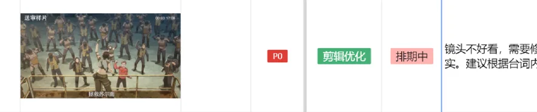
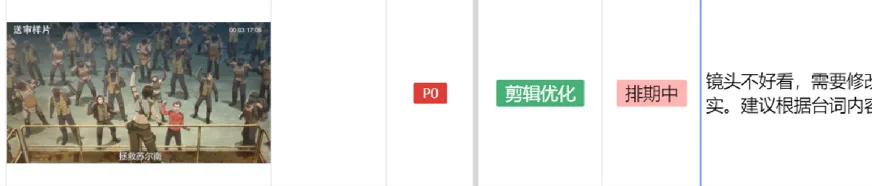

《和平》番剧修脸
双主角修脸 · 叙事优化：哭戏特写与演讲英雄镜头

观看正片和平精英：地铁逃生
原站视频/B 站双主角的镜头调整
Other Projects · 03 · 番剧《和平》· P1 阶段
P1 阶段重做两处关键镜头：哭戏特写和演讲镜头，并把“只改一处”的方法沉淀下来。










宏观 · 三件事
028 机舱哭泣特写
开发“文戏表情 skills”，结合前情设定迭代两版，稳定交付。
061 演讲 · 英雄镜头
迈克尔·贝式：极低仰角、逆光轮廓、青橙色调、体积光微尘，打磨三轮。
2 镜 · 3 轮
哭戏 6.5s · 演讲 8s